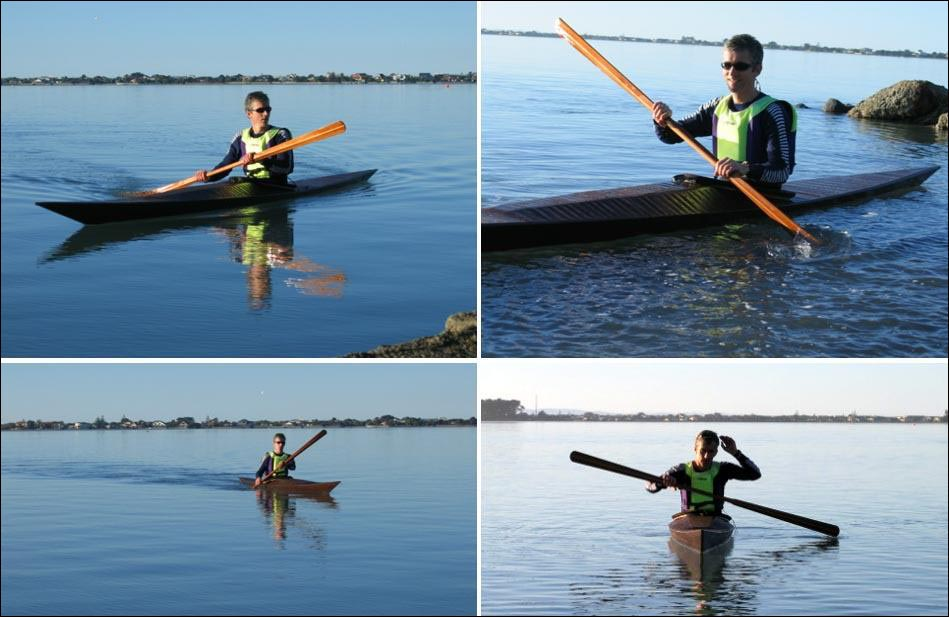

| Sea Ranger by Rob Bentley (NZ) | Menu Previous Page Next Page |
|

Rob paddles his wood frame Sea Ranger at an estuary near Christchurch, New Zealand. He reports that the kayak..." feels very forgiving, with heaps of secondary stability." The skin is sewn polyester coated with Urethane. Use the {Back} key to return.
|
|